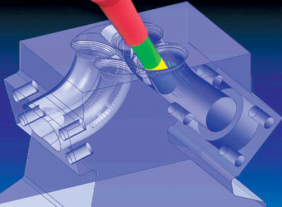

|
Mark Summers, CNC Software: Kullanýcýlar genel olarak tek aþamada çalýþacak tezgahlar arýyorlar. Tezgahlarda teknoloji özellikle de, çok eksenli tezgahlar da daha çok satýn alýnabilir hale geliyor. Ve doðal olarak da insanlar çok eksenli ve yüksek hýzlý tezgahlarý satýn alýp bunlarýn avantajlarýný kullanýyorlar. Kullanýcýlar yazýlýmlarý satýn alýrken bu yazýlýmlarýn sürekli geliþtirilebilir olmasýna bakarlar. Çünkü eðer böyle ise bu tezgahlardan daha fazla avantaj elde edilmesi saðlanmýþ olur.
Kullanýcýlarýn sürekli olarak geliþtirebilecekleri yazýlýmlar saplamanýn bir yolu da "bakým programý"dýr. Böylece yazýlým tedarikçileri yazýlýmý geliþtirdikçe kullanýcýda sürekli olarak güncellemelerle yazýlýmý geliþtirirler. Bir yazýlýmýn yeni sürümünü beklemek yerine bir bakým program kullanýcýsý, tedarikçiler; yeni deðiþimler ve eklemeler yaptýkça bunlarý alýr ve kendi programýna uygular. Bu da size elinizdeki yazýlýmý iyileþtirme ve eriþilebilecek en iyi yazýlýmla çalýþma imkaný verir. Bu durum da; yazýlýmýn sahip olduðu ekstra fonksiyonlarla iþinizi daha kolay ve hýzlý yapmanýzý saðlayarak sizi rekabetçi ortamda öne çýkartýr.
3) Çok fonksiyonlu iþleme operasyonu, 5 eksenli tezgahlar gibi yeni geliþen trendlerin zorluklarý nelerdir? Sizin yazýlýmýnýz bu geliþmiþ iþleme yöntemlerinin hangilerini kullanýcýya sunabilmektedir?
Bill Hasenjaeger: Önceden, özet olarak çok fonksiyonlu tezgahlarý ve kompleks iþlemleri simülasyon etmek için VERICUT'ýn son versiyonundan bahsetmiþtim. Buna raðmen önemli bir gereksimin belki de en önemlisi beþ eksenli bir kesim iþleminin simülasyonunu yaparken her eksende uzaklaþtýrýlan malzemeyi doðru bir þekilde modelleyen simülasyon yazýlým yeteneðidir.
Uzun bir müddet bu yeteneði VERICUT'ýn en önemli gücü oldu. Ama biz bunu sürekli olarak geliþtirebiliriz. VERICUT 6.0 müþterilerden ve çeþitli faktörlerden kaynaklanan çeþitli þekiller ile freze kesicilerini de kapsayan kompleks freze ekipman þekillerinin modellenmesini kapsar. VERICUT 6.0 ayný zamanda farklýlýklarýn benzetilebilmesini, freze ile torna simülasyonunu, iþ durumunun kontrol edilebilmesini de saðlamaktadýr. Bu çalýþmanýn sonucu olarak kompleks freze ve torna, çok fonksiyonlu tezgahlarýný oluþturmuþ oldu.
Dr. Juergen Lauscher, IBM: Kompleks tornalama merkezlerinin pazar payý hýzlý bir þekilde artmaktadýr. Özellikle makine ve havacýlýk sanayisindeki iþletmeler, iþlem basamaklarýnýn azaltýlmasý, tezgahlarýnýn azaltýlmasý ve istasyonlar arasýndaki harcanan zamanýn azaltýlmasý avantajýný kullanmaktadýrlar. Geçen yýlýn baþýndan itibaren CATIA V5 çoklu milli, çoklu taretli ve taþýyýcý aparatlarlý torna tezgahlarýný desteklemeye baþlamýþtýr. Çözüm ayrýca operasyon zamanlarýnýn optimize edilebilmesi amacýyla tornalama, frezeleme ve matkapla delik delme operasyonlarýyla, eþ zamanlý paralel iþlemeyi de içerir.
Peter Dickin, Delcam: Beþ eksenli iþlemenin üç eksenli iþlemeye gore daha kompleks olduðu açýktýr. Geçmiþte 5 eksenli tezgahlarý destekleyen yazýlýmlar zaman zaman bulunabilmiþ olmasýna raðmen; oldukça yavaþ ve kullanýmý zor yazýlýmlardý. Delcam'ýn son sürümü PowerMILL iþlemi olabildiðine basitleþtirerek beþ eksenli programlara daha rahat eriþebilir hale getirmiþtir. Simülasyondaki geliþmeler de programýn bilgisayarda kolaylýkla kontrol edilebilmesini ve bunun sonucunda atölye ortamýnda tezgahýn kusursuz çalýþacaðýna dair iyi bir güvence kazanmamýzý saðladý.
Yüksek hýzla çalýþan tezgahlarla ilgili en büyük sorun þudur; iþler yanlýþ gittiði zaman bu tezgahlarda iþler daha hýzlý kötüye gider, hem iþ parçasý hem de tezgahýn kendisi çok ciddi þekilde zarar görür. Temel öncelik takým yolunun olabildiðince yumuþaktutmak ve ani yükleme veya yön deðiþiklerindenolabildiðinckaçýnmaktýr.

Delcam, Hannover'daki EMO fuarýnda PowerMILL CAM yazýlým sisteminin
yeni versiyonunu piyasaya sürdü. PowerMILL 6 2, 3, ve 5 eksenli
iþleme için birçok yeni fonksiyonlar içermektedir.
Bill Gibbs, Gibbs and Associates: Cevabýmý konuþmamýn sýnýrlarý içinde tutabilmem için bana odak noktamý çok fonksiyonlu tezgahlar üzerinde tutmama izin verin. Gibbs CAM MTM dört yýlý aþkýn bir süredir pazarýn tepe noktasýnda bulunmaktadýr. bu zaman süresi içerisinde çok fonksiyonlu tezgah sanayisi geliþmeye ve ilerlemeye devam etmiþtir. Eskiden iki milli/ iki taretli cihazlar çok yaygýn deðillerdi. Bugün, iki milli/ iki taretli MTM çift yüzlü þekli olmaya devam etmektedirler, ama ayný zamanda daha fazla mil ve taretlerle aðýr iþ yükü altýnda çalýþan tezgahlarý da tanýmlanmaktadýr. Gerçekte, tornalama kabiliyetine sahip frezeleme tezgahlarýnýn ve frezeleme kabiliyetinden olan torna tezgahlarýnýn olabileceðini söylemek doðru bir yaklaþýmdýr. Üreticiler, yüksek oranda deðiþiklikler yapýlabilen ve sonsuz sayýda tezgah þemasý oluþturabilecek tezgah tasarýmlarý geliþtirmektedirler. Biz bu durumu önceden görmüþtük ve bu yüzden de MTM, tezgahlarýnýn geliþiminin hýzýný ayarlamak için tasarlandý.
Ayný zamanda MTM iþlem geçirmiþ parça üzerinde tekrar iþlem yapýlmasýný geleneksel tezgahlarýn olduðundan daha zor hale getirdi. Yýllar boyunca geniþ bir açýlým içeren çok çeþitli MTM tezgahlarý geliþtirildi.
Mark Summers, CNC Software: Beþ eksenli tezgahlar geliþtirildi ve böylelikle bir çok kullanýcý çok eksenli tezgahlarýn avantajlarýný kullanabilir hale geldi. Kullanýcýlar, takým ömrünü uzatýrken iþleme operasyon zamanýný azaltarak parçalarýn daha hýzlý kesilmesini saðlayan yeni uygulama ve teknolojilerin avantajlarýndan faydalanabildiler. CNC yazýlýmlarda çok eksenli kurulumlarla, takým yollarýný ve teknikleri test etme ve Ar-Ge teorisinin gerçek hayatta uygulamasýný görme imkanýna sahibiz. Ýyi bir CAD/CAM yazýlýmý makine hareketine, makinenin hareket ettiði yola ve eksenin kontrolüne özel bir dikkat harcamalýdýr.
HSM ile, etkinliði ve ROI'yi geliþtiren yeni takým yolu teknolojileri bulunmaktadýr. HSM tezgahlarýnýn büyük yoðunluðunun amacý, çok az keskin dönüþlerle hýzlý yüzeysel kesimlere imkan veren düz harekettir. HSM bu hareket ve yüksek hýzý birleþtirerek çok hýzlý bir þekilde iyi ürünler ortaya koyar.
Chuck Matthews, DP Technology: ESPRIT; yazýlýmda performans artýrmaya çalýþýrken diðer bir taraftan da kullaným kolaylýðýný artýrmaya çalýþýr. Geçen yýllara kýyasla eðilim, kolay ve basit programcýlýðý, kendisini bu iþe adayan programcýlarýn önüne geçirdi. Programcýlar daha fazla uzun süreli eðitimleri istemiyorlar. Bu sebepten dolayý eðitim süreleri azaltýlmalýdýr.
Giovanni Opimitti, Vero International: Bunlar güzel geliþmeler ama çoklu iþleme (multimachining), 5 eksenli iþleme ve yüksek hýzlý iþleme, þu ana kadar hiç olmadýðý kadar güçlü programlamaya ihtiyaç duyulmasýna sebep oldu. Örneðin: bir beþ eksenli makine uygulama alanýna (kalýp, otomotiv, havacýlýk, lazer kesim) baðlý olarak çok özel rotasyonlara ihtiyaç duyuluyor. Bunun yanýn da tezgahta ve takým tutucuda meydana gelebilecek muhtemel hasarlardan kaçýnmak için daha içerikli bir algoritma gerekli. Yüksek hýzda çalýþan tezgah demek sadece çok hýzlý bir þekilde iþleme yapan ve çok hýzlý dönen beseleme ve mil hýzý anlamýna gelmez. Ayný zamanda bu durum takým yollarýný sabit tutma ve ani deðiþikliklerden kaçýnmak için belirli rotasyonlarý çizmesini gerektirir.
Vynce Paradise, NX Machining and Tooling: Çok fonksiyonlu tezgahlar Basit tezgahlarda gerek olmayan oryantasyon, konumlandýrma ve sistemleri koordine etmek gibi kompleks zorluklar getiriyor. CAM yazýlýmlarý ve postprosesörler bu zorluklarla baþa çýkabilir durumda olmalý. Farklý üreticiler, sahip olduklarý tezgahýn nasýl tasarlandýðýna ve sahip olduðu özelliklerine göre, farklý zorluklar oluþturabilirler.
Çok fonksiyonlu tezgahlar iyi bir simülasyon gerektirirler. CAM sistemlerinin büyük bir çoðunluðu sahip olduklarý tezgahlarýndan ve kendi datalarýndan yazýlýmlarýný kullanarak kendi simülasyon uygulamalarýný oluþturmakta ve yeni simülasyon modellerini yapmaktadýrlar. CAM satýcýsý için ise bunun pratikliði, çýktýlarýn farklý kontrolcüler, tezgah ve modellerde de kullanýlabilir olmasýdýr. Buna raðmen iþletmelerin -postprosesör G kod programlarýnda simülasyon yapabilmek için pahalý iþleme operasyon simülasyon paketlerini almaya karar verdikleri durumlarýný görürüz. Bu gerçekte tezgahýn içinde ne olduðunu görmek için tek yoldur. Freze-torna konfigürasyonlu tezgahlar gibi kompleks tezgahlarda, otomatik takým yolu oluþturan simülasyon sürücülü tezgahlar ile bir G- kod sürücü simülasyonu arasýndaki fark parçalanmýþ tezgah olabilir.
|